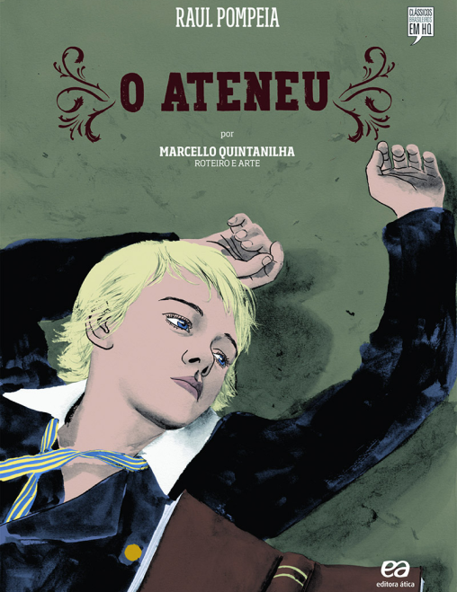

Clássico
Esta seção é dedicada a obras literárias com importância duradoura sendo assim exemplares dentro de sua tradição cultural.
Aproveite!
-

O Ateneu
O romance do escritor brasileiro Raul Pompeia, considerado como o único exemplar de romance impressionista na literatura brasileira
Escute Aqui! -
Os Lusíadas
Os Lusíadas é uma obra de poesia épica, a primeira epopeia portuguesa publicada em versão impressa.
/ Escute Aqui!